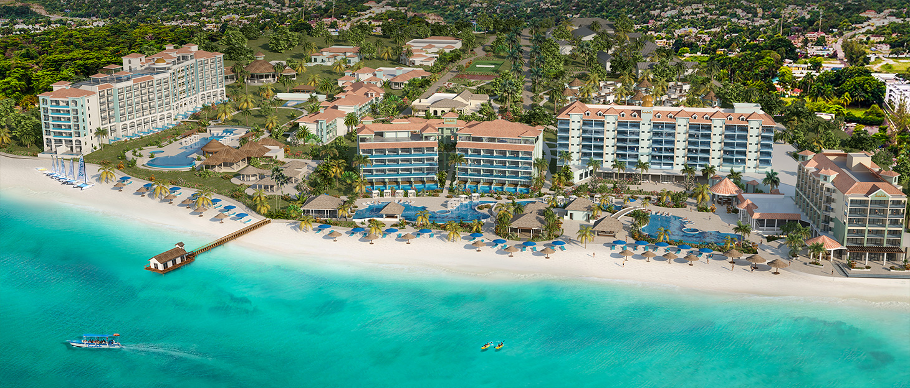
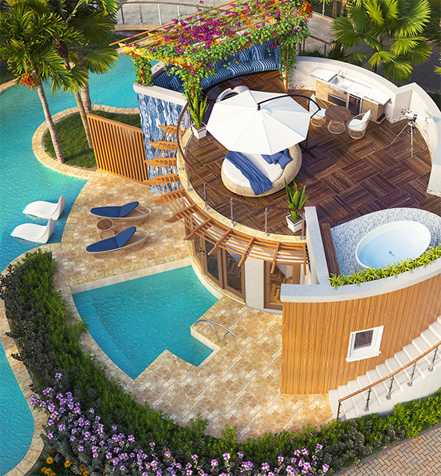
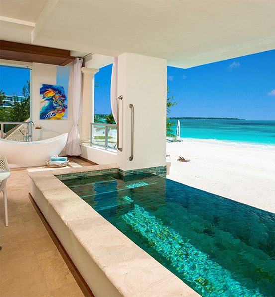

The all-new Sandals Dunn’s River will receive a top-to-bottom renovation while the adjacent oceanfront land will
be transformed into Sandals Royal Dunn’s River, a modern luxurious escape featuring 250 lavish rooms and suites.
Similar to our resorts in Barbados, exclusive exchange privileges will be available between these adjacent resorts.

Introducing two brand-new signature suites in Ocho Rios—Sandals first Swim-up Rondovals with Open Terrace and
Jamaica’s first Beachfront SkyPool Suites. Our iconic suites-in-the-round now feature an exposed top deck perfect
for soaking up the sun from your Tranquility Soaking Tub™ for two, while our luxurious Beachfront SkyPool Suites
feature an infinity plunge pool that elevates romance to new heights.

Swim-up Rondovals
with Open Terrace

Beachfront
SkyPool Suites
Surrounded by banyan trees and limestone, the cascading sounds of water produce a calming feeling that is the
gateway to relaxation and well-being. Capturing the soothing nature of the falls is at the heart of our all-new
resorts, where wellness and nature go hand-in-hand.